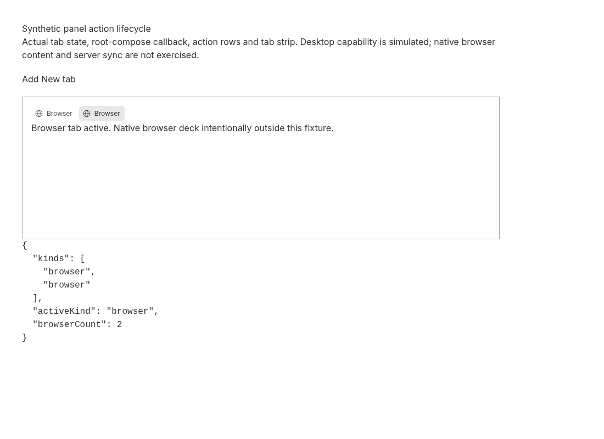
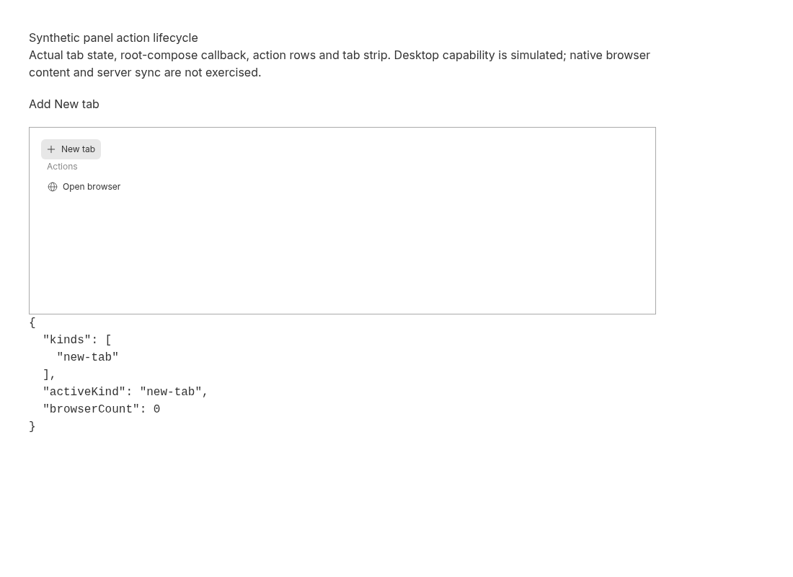
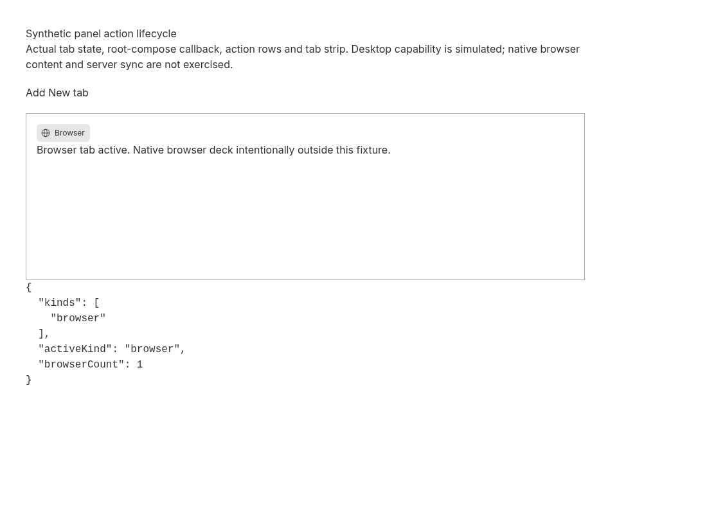

Browser action replaces New tab in the tested current-main panel path
2026-09-30 · Bug · Low priority · Low effort
NOT REPRODUCED · High confidence in the isolated panel state/action result; native desktop integration remains unverified.
Claim and tested scope
The issue describes the browser action adding a Browser tab while leaving its originating empty New tab open. Expected: replace New tab, as the terminal launcher does. The test explicitly creates a persisted New tab before clicking, rather than relying only on an implicit empty-panel fallback.
The actual PluginPanelRightPanelHost runs in its existing jsdom test harness with real panel tab state and action callbacks. Its existing network, desktop capability, secondary-panel presentation, NewTabPage, browser deck and terminal service boundaries are mocked. Two added cases check explicit New tab replacement, retention of an existing Browser tab, closing the second browser, and terminal replacement after a mocked successful terminal creation.
A separate optimized Chromium fixture exercises the real useThreadFileTabs hook, local Jotai panel state, RootComposePanelTabContent callback wrapper, NewTabActions and SecondaryPanelTabStrip. The lazy NewTabPage boundary is replaced with the real NewTabActions to omit file search; other lazy pane bodies are inert. Browser capability is simulated with an empty desktop browser object. The fixture supplies the normal openTab browser request as the parent callback. Native browser content is explicitly represented by a text placeholder, not a screenshot of a native browser. No navigation to any external or user page occurs.
Expected versus actual in both clean runs
| Action | Actual tab kinds | Result |
|---|---|---|
| Explicit Add New tab | [new-tab] | Precondition established |
| Click Open browser | [browser] | New tab removed; Browser active |
| Add another New tab | [browser, new-tab] | Existing Browser preserved |
| Click Open browser again | [browser, browser] | Only originating New tab replaced |
| Close second Browser | [browser] | No leftover New tab |
| Separate terminal control, starting from [new-tab] | [terminal] | New tab replaced after one mocked successful create call; component test only |
Both component runs passed all 21 tests, including the two added cases. Both browser runs asserted the five matching states, no runtime exceptions, and the actual rendered panel strip. The reported leftover tab was not observed in these directly relevant action/state paths. This is not a claim that the full native application or every persisted-state race is unaffected.
Source explanation and next useful test
The shared openTab hook explicitly chooses replace-new-tab for browser requests. The state updater calls replaceNewTabWithSecondaryPanelTabInState, which removes or replaces the New tab while preserving the other tabs and activating Browser. The plugin-panel browser callback uses this hook; its New tab action activates the originating tab and invokes that callback. The root-compose callback wrapper does the same activation/delegation exercised in the browser fixture.
The main thread-view browser callback also calls the shared browser openTab operation. That full view was inspected but not mounted. An absent closeTab call at the action site therefore does not by itself establish a leak: replacement already occurs lower in the call path.
No defect root cause was established, and no production change is proposed from these passing tests. Next: reproduce in native desktop with the full ThreadDetailView, actual BrowserTabDeck, tab synchronization and the original persisted panel/split state. If a stale New tab reappears, trace authoritative server-tab reconciliation and native action ordering. Retain these replacement and unrelated-tab controls. This report does not call the issue ALREADY FIXED or infer a fix from a merged PR; no original-release or pre-fix execution occurred.
Trusted base and environment
Fetched public origin/main: e52f3662fb6e52eb85238d22a07d1bac16b6e430. Linux x86_64, Node 24.19.0, pinned pnpm 9.15.0, Vitest 4.1.1 with jsdom, Vite 8.0.12 optimized fixture build, headless desktop Chromium 151.0.7922.173 at 1100×800. Two clean detached worktrees at the identical SHA, separate node_modules/install caches/browser profiles and loopback ports; shared dependency download store. Frozen installs, upstream test prerequisites and both fixture builds succeeded. No dependency was added.
Exact repeatable steps
Save the inline patch outside the checkouts and the four fixture source files below under apps/app/issue4411/ in each checkout. Save capture.mjs outside the checkouts. Use pnpm 9.15.0 and a locally installed Chromium. The commands preserve executed options with local scratch paths normalized. Start the HTTP server and browser in separate terminals. The browser capture clicks actual action buttons and checks the resulting state; generated build output is not copied between runs.
WORK=$(mktemp -d) git clone https://github.com/get-bb/bb.git "$WORK/base" git -C "$WORK/base" worktree add --detach "$WORK/first" e52f3662fb6e52eb85238d22a07d1bac16b6e430 git -C "$WORK/base" worktree add --detach "$WORK/second" e52f3662fb6e52eb85238d22a07d1bac16b6e430 # Save regression.patch and capture.mjs in WORK, and the four fixture files in each checkout. cd "$WORK/first" npm_config_cache="$WORK/npm-first" npm_config_devdir="$WORK/node-gyp-first" XDG_CACHE_HOME="$WORK/cache-first" pnpm install --frozen-lockfile --store-dir "$WORK/dependency-store" git apply "$WORK/regression.patch" pnpm exec turbo run test --filter=@bb/app --force -- PluginPanelRightPanelHost.test.tsx --silent=false cd apps/app pnpm exec vite build --config issue4411/vite.config.ts python -m http.server 49411 --bind 127.0.0.1 --directory "$WORK/first/apps/app/issue4411/dist" chromium --headless --no-sandbox --disable-gpu --no-first-run --disable-dev-shm-usage --remote-debugging-address=127.0.0.1 --remote-debugging-port=49412 --user-data-dir="$WORK/browser-first" about:blank node "$WORK/capture.mjs" 49412 49411 "$WORK/first-run" # Same-agent second clean reproduction: cd "$WORK/second" npm_config_cache="$WORK/npm-second" npm_config_devdir="$WORK/node-gyp-second" XDG_CACHE_HOME="$WORK/cache-second" pnpm install --frozen-lockfile --store-dir "$WORK/dependency-store" git apply "$WORK/regression.patch" pnpm exec turbo run test --filter=@bb/app --force -- PluginPanelRightPanelHost.test.tsx --silent=false cd apps/app pnpm exec vite build --config issue4411/vite.config.ts python -m http.server 49413 --bind 127.0.0.1 --directory "$WORK/second/apps/app/issue4411/dist" chromium --headless --no-sandbox --disable-gpu --no-first-run --disable-dev-shm-usage --remote-debugging-address=127.0.0.1 --remote-debugging-port=49414 --user-data-dir="$WORK/browser-second" about:blank node "$WORK/capture.mjs" 49414 49413 "$WORK/second-run"
Complete component regression patch
diff --git a/apps/app/src/components/plugin/PluginPanelRightPanelHost.test.tsx b/apps/app/src/components/plugin/PluginPanelRightPanelHost.test.tsx
index 48f238826..6a074c40d 100644
--- a/apps/app/src/components/plugin/PluginPanelRightPanelHost.test.tsx
+++ b/apps/app/src/components/plugin/PluginPanelRightPanelHost.test.tsx
@@ -1299,6 +1299,38 @@ describe("PluginPanelRightPanelHost", () => {
).toBeTruthy();
});
+ it("issue4411 replaces an explicitly added new tab and preserves an existing browser", async () => {
+ browserState.available = true;
+ renderHost();
+ fireEvent.click(await screen.findByRole("button", {name:"Show right panel"}));
+ fireEvent.click(screen.getByRole("button", {name:"Add tab"}));
+ expect(secondaryPanelState.tabKinds).toEqual(["new-tab"]);
+ fireEvent.click(await screen.findByRole("button", {name:"Open browser"}));
+ await screen.findByTestId("plugin-page-browser");
+ const first = [...secondaryPanelState.tabKinds];
+ expect(first).toEqual(["browser"]);
+ fireEvent.click(screen.getByRole("button", {name:"Add tab"}));
+ expect(secondaryPanelState.tabKinds).toEqual(["browser","new-tab"]);
+ fireEvent.click(await screen.findByRole("button", {name:"Open browser"}));
+ await screen.findByTestId("plugin-page-browser");
+ const second = [...secondaryPanelState.tabKinds];
+ expect(second).toEqual(["browser","browser"]);
+ fireEvent.click(screen.getAllByRole("button", {name:"Close Browser"})[1]);
+ expect(secondaryPanelState.tabKinds).toEqual(["browser"]);
+ console.log("ISSUE4411", JSON.stringify({first,second,afterClose:[...secondaryPanelState.tabKinds]}));
+ });
+
+ it("issue4411 terminal control replaces an explicitly added new tab", async () => {
+ renderHost();
+ fireEvent.click(await screen.findByRole("button", {name:"Show right panel"}));
+ fireEvent.click(screen.getByRole("button", {name:"Add tab"}));
+ expect(secondaryPanelState.tabKinds).toEqual(["new-tab"]);
+ fireEvent.click(screen.getByRole("button", {name:"Start terminal"}));
+ await screen.findByTestId("plugin-page-terminal");
+ expect(secondaryPanelState.tabKinds).toEqual(["terminal"]);
+ console.log("ISSUE4411", JSON.stringify({terminalControl:[...secondaryPanelState.tabKinds],calls:createTerminal.mock.calls.length}));
+ });
+
it("opens Browser without a plugin allowlist", async () => {
browserState.available = true;
renderHost();
apps/app/issue4411/index.html
<html><head><title>Synthetic panel lifecycle</title></head><body><div id="root"></div><script type="module" src="/main.tsx"></script></body></html>
apps/app/issue4411/main.tsx
import React from "react";
import {createRoot} from "react-dom/client";
import {QueryClient,QueryClientProvider} from "@tanstack/react-query";
import {Provider,createStore} from "jotai";
import {TooltipProvider} from "@bb/shared-ui/tooltip";
import {Icon} from "@bb/shared-ui/icon";
import {useThreadFileTabs} from "../src/components/secondary-panel/useThreadFileTabs";
import {useFixedPanelTabsState} from "../src/lib/fixed-panel-tabs";
import {RootComposePanelTabContent} from "../src/views/RootComposePanelTabContent";
import {SecondaryPanelTabStrip} from "../src/components/secondary-panel/SecondaryPanelTabStrip";
import "../src/app.css";
window.bbDesktop = {browser:{}} as never;
const noop=()=>{};
function Fixture(){
const tabs=useThreadFileTabs({panelStateId:"synthetic-panel",syncThreadId:null,environmentId:"synthetic-environment",storageFiles:undefined,terminalSessions:undefined});
const state=useFixedPanelTabsState("synthetic-panel",null);
const active=state.secondary.tabs.find(t=>t.id===state.secondary.activeTabId);
const rows=tabs.orderedSecondaryFileTabs.map(tab=>({tab,label:tab.kind==="new-tab"?"New tab":"Browser",leadingVisual:<Icon name={tab.kind==="new-tab"?"Plus":"Globe"}/>,statusLabel:null,onSelect:()=>tabs.activateTab(tab.id),onClose:()=>tabs.closeTab(tab.id),renderContent:()=>null}));
const renderNew=active?.kind==="new-tab";
return <main style={{padding:40,maxWidth:950}}><h1>Synthetic panel action lifecycle</h1><p>Actual tab state, root-compose callback, action rows and tab strip. Desktop capability is simulated; native browser content and server sync are not exercised.</p><button id="add" style={{margin:"20px 0"}} onClick={()=>tabs.openTab({kind:"new-tab"})}>Add New tab</button><section style={{border:"1px solid #aaa",minHeight:260,padding:16}}><SecondaryPanelTabStrip tabs={rows} activeTabId={state.secondary.activeTabId} onReorderTab={tabs.reorderTab} usesDesktopChrome={false} isPanelOpen/>{renderNew?<RootComposePanelTabContent activeTabId={active.id} canCreateTerminal={false} currentProjectId="synthetic-project" isPanelOpen isPanelPersistedOpen isProjectless onActivateTab={tabs.activateTab} onAutoFocusNewTabHandled={noop} onAutoFocusTerminalHandled={noop} onOpenBrowser={()=>tabs.openTab({kind:"browser",url:""})} onOpenPanelLink={()=>false} onSelectFileSearchResult={noop} onSelectionAddToChat={noop} onStartTerminal={noop} pane={{isFocused:true,onFocusPane:noop}} primaryHostId={null} pluginActions={[]} projectSources={[]} projects={[]} rootPanelEnvironmentId="synthetic-environment" rootPanelThreadId="synthetic-thread" rootProjectHostId={null} shouldAutoFocusNewTab={false} shouldAutoFocusTerminal={false} tab={active} terminalTarget={null}/>:active?.kind==="browser"?<p id="browser-placeholder">Browser tab active. Native browser deck intentionally outside this fixture.</p>:<p>No panel tabs</p>}</section><pre id="state">{JSON.stringify({kinds:state.secondary.tabs.map(t=>t.kind),activeKind:active?.kind??null,browserCount:tabs.browserTabs.length},null,2)}</pre></main>;
}
createRoot(document.getElementById("root")!).render(<Provider store={createStore()}><QueryClientProvider client={new QueryClient({defaultOptions:{queries:{retry:false}}})}><TooltipProvider><Fixture/></TooltipProvider></QueryClientProvider></Provider>);
apps/app/issue4411/lazy.tsx
import {NewTabActions} from "../src/components/secondary-panel/NewTabActions";
export const LazyNewTabPage = (props:any)=><NewTabActions {...props}/>;
export const LazyFilePreview = ()=>null;
export const LazyHostFilePreviewTabContent = ()=>null;
export const LazyProjectFilePreviewTabContent = ()=>null;
export const LazyThreadStorageFilePreviewTabContent = ()=>null;
export const LazyThreadTerminalPanel = ()=>null;
export const LazyWorkspaceFilePreviewTabContent = ()=>null;
apps/app/issue4411/vite.config.ts
import {defineConfig} from "vite";
import {resolve} from "node:path";
import {sharedViteConfig} from "../vite.config";
export default defineConfig({...sharedViteConfig,root:__dirname,
resolve:{...sharedViteConfig.resolve,alias:{"@/components/secondary-panel/lazySecondaryPanelComponents":resolve(__dirname,"lazy.tsx"),...sharedViteConfig.resolve.alias}},
plugins:sharedViteConfig.plugins.filter(plugin=>!["bb:font-preload","bb:split-prefetch"].includes(plugin.name)),
build:{...sharedViteConfig.build,outDir:"dist",emptyOutDir:true}});
capture.mjs
import { writeFile } from 'node:fs/promises';
const [debugPort,appPort,output]=process.argv.slice(2);
const tabs=await(await fetch(`http://127.0.0.1:${debugPort}/json/list`)).json();
const ws=new WebSocket(tabs.find(t=>t.type==='page').webSocketDebuggerUrl);
await new Promise(r=>ws.addEventListener('open',r,{once:true}));let id=0;const pending=new Map();
ws.addEventListener('message',event=>{const x=JSON.parse(event.data);if(x.id){const p=pending.get(x.id);pending.delete(x.id);x.error?p.reject(new Error(JSON.stringify(x.error))):p.resolve(x.result);}});
const call=(method,params={})=>new Promise((resolve,reject)=>{const serial=++id;pending.set(serial,{resolve,reject});ws.send(JSON.stringify({id:serial,method,params}));});
const evaluate=async expression=>{const x=await call('Runtime.evaluate',{expression,returnByValue:true,awaitPromise:true});if(x.exceptionDetails)throw new Error(JSON.stringify(x.exceptionDetails));return x.result.value;};
await call('Page.enable');await call('Runtime.enable');await call('Network.enable');await call('Network.setCacheDisabled',{cacheDisabled:true});
await call('Emulation.setDeviceMetricsOverride',{width:1100,height:800,deviceScaleFactor:1,mobile:false});
const errors=[];
ws.addEventListener('message',event=>{const x=JSON.parse(event.data);if(x.method==='Runtime.exceptionThrown')errors.push(x.params.exceptionDetails.text+': '+(x.params.exceptionDetails.exception?.description??''));});
await call('Page.navigate',{url:`http://127.0.0.1:${appPort}/`});
await new Promise(r=>setTimeout(r,2500));
const observations=[];
const inspect=async label=>{const state=await evaluate('JSON.parse(document.getElementById("state").textContent)');observations.push({label,...state});return state;};
const click=async text=>{await evaluate(`(()=>{const el=[...document.querySelectorAll('button,[role="button"]')].find(e=>e.textContent.trim()===${JSON.stringify(text)});if(!el)throw new Error('Missing action');el.click();})()`);await new Promise(r=>setTimeout(r,250));};
const shot=async name=>{const s=await call('Page.captureScreenshot',{format:'png',captureBeyondViewport:false});await writeFile(output+'-'+name+'.png',Buffer.from(s.data,'base64'));};
await click('Add New tab');let state=await inspect('explicit-new-tab');if(JSON.stringify(state.kinds)!=='["new-tab"]')throw new Error(JSON.stringify(state));await shot('before');
await click('Open browser');state=await inspect('browser-action');if(JSON.stringify(state.kinds)!=='["browser"]'||state.activeKind!=='browser')throw new Error(JSON.stringify(state));await shot('after');
await click('Add New tab');state=await inspect('existing-browser-plus-new');if(JSON.stringify(state.kinds)!=='["browser","new-tab"]')throw new Error(JSON.stringify(state));
await click('Open browser');state=await inspect('second-browser-action');if(JSON.stringify(state.kinds)!=='["browser","browser"]')throw new Error(JSON.stringify(state));await shot('control');
await evaluate(`document.querySelectorAll('button[aria-label="Close Browser"]')[1].click()`);await new Promise(r=>setTimeout(r,250));state=await inspect('close-control');if(JSON.stringify(state.kinds)!=='["browser"]')throw new Error(JSON.stringify(state));
if(errors.length)throw new Error(JSON.stringify(errors));
const result={observations,browser:await call('Browser.getVersion'),viewport:{width:1100,height:800},errors};await writeFile(output+'.json',JSON.stringify(result,null,2));console.log(JSON.stringify(result));ws.close();
Same-agent second clean reproduction: actual evidence
The same agent personally installed, tested, built and captured the fixture again in the second clean checkout at the recorded SHA. Both component observation records and browser state sequences match exactly. All three corresponding screenshot pairs are byte-identical; all six files were inspected. This is a same-agent second clean reproduction, not independent verification.
first actual component output
@bb/app:test: ISSUE4411 {"first":["browser"],"second":["browser","browser"],"afterClose":["browser"]}
@bb/app:test: ISSUE4411 {"terminalControl":["terminal"],"calls":1}
@bb/app:test: Test Files 1 passed (1)
@bb/app:test: Tests 21 passed (21)
@bb/app:test: Duration 5.63s (transform 1.89s, setup 119ms, import 2.27s, tests 2.51s, environment 552ms)
first actual browser observations
{
"observations": [
{
"label": "explicit-new-tab",
"kinds": [
"new-tab"
],
"activeKind": "new-tab",
"browserCount": 0
},
{
"label": "browser-action",
"kinds": [
"browser"
],
"activeKind": "browser",
"browserCount": 1
},
{
"label": "existing-browser-plus-new",
"kinds": [
"browser",
"new-tab"
],
"activeKind": "new-tab",
"browserCount": 1
},
{
"label": "second-browser-action",
"kinds": [
"browser",
"browser"
],
"activeKind": "browser",
"browserCount": 2
},
{
"label": "close-control",
"kinds": [
"browser"
],
"activeKind": "browser",
"browserCount": 1
}
],
"browser": {
"protocolVersion": "1.3",
"product": "Chrome/151.0.7922.173",
"revision": "@a96602f30358e9b5d256a0464e7e4d4bec223004",
"userAgent": "Mozilla/5.0 (X11; Linux x86_64) AppleWebKit/537.36 (KHTML, like Gecko) HeadlessChrome/151.0.0.0 Safari/537.36",
"jsVersion": "15.1.206.23"
},
"viewport": {
"width": 1100,
"height": 800
},
"errors": []
}
first: before

first: after

first: control

second actual component output
@bb/app:test: ISSUE4411 {"first":["browser"],"second":["browser","browser"],"afterClose":["browser"]}
@bb/app:test: ISSUE4411 {"terminalControl":["terminal"],"calls":1}
@bb/app:test: Test Files 1 passed (1)
@bb/app:test: Tests 21 passed (21)
@bb/app:test: Duration 5.66s (transform 1.98s, setup 123ms, import 2.33s, tests 2.48s, environment 563ms)
second actual browser observations
{
"observations": [
{
"label": "explicit-new-tab",
"kinds": [
"new-tab"
],
"activeKind": "new-tab",
"browserCount": 0
},
{
"label": "browser-action",
"kinds": [
"browser"
],
"activeKind": "browser",
"browserCount": 1
},
{
"label": "existing-browser-plus-new",
"kinds": [
"browser",
"new-tab"
],
"activeKind": "new-tab",
"browserCount": 1
},
{
"label": "second-browser-action",
"kinds": [
"browser",
"browser"
],
"activeKind": "browser",
"browserCount": 2
},
{
"label": "close-control",
"kinds": [
"browser"
],
"activeKind": "browser",
"browserCount": 1
}
],
"browser": {
"protocolVersion": "1.3",
"product": "Chrome/151.0.7922.173",
"revision": "@a96602f30358e9b5d256a0464e7e4d4bec223004",
"userAgent": "Mozilla/5.0 (X11; Linux x86_64) AppleWebKit/537.36 (KHTML, like Gecko) HeadlessChrome/151.0.0.0 Safari/537.36",
"jsVersion": "15.1.206.23"
},
"viewport": {
"width": 1100,
"height": 800
},
"errors": []
}
second: before

second: after

second: control

Limitations, setup recovery and trust boundary
The full native macOS desktop app, Electron browser lifecycle, original installed release, server-backed thread-tab persistence/synchronization, full ThreadDetailView, split-pane restoration and file search were not tested. The browser fixture uses root-compose wiring; the component fixture uses plugin-panel wiring. Both use the shared state operation used by the thread view, but neither is a full thread-view/native integration test. Coverage remains incomplete for those conditions; the issue remains open.
Initial checkout failed because the workspace exhausted filesystem inodes. Only regenerable dependency directories from two completed investigations were removed; their source fixtures and evidence were preserved. A fresh checkout then succeeded. The first component invocation hid passing console output under the repository default; it was rerun with --silent=false before retaining the final both-run evidence. These setup details are not treated as negative reproduction evidence.
Issue narrative, links and code pointers were untrusted claims only. No issue-supplied command, code, branch or URL was executed or fetched. Tests were derived from the freshly fetched trusted implementation and its existing test harness. All fixture identifiers are synthetic; the terminal control creates no actual terminal process. No real user runtime, account data, files or credentials were accessed. Production code is unchanged.